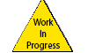
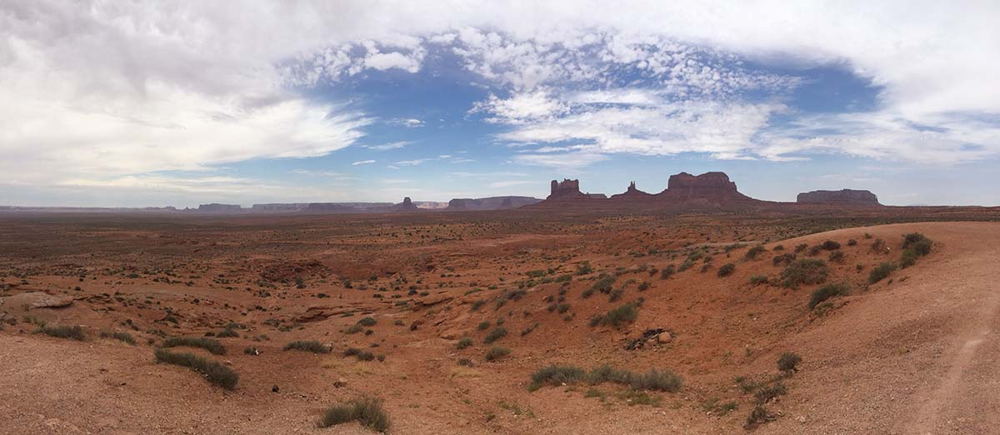

Tony Alan Hendrick
About Me
My name is Tony and I am recent graduate at College of Southern Nevada with an AAS Degree in Computer Information Technology - Software Emphasis. I started coding in the early part of 2013 and have primarily focused on Java , C, and C++. I have also done some programming in Python and am currently improving my HTML, CSS, and JavaScript knowledge by following Free Code Camp's online course.
 Github
Github Twitter
Twitter Facebook
Facebook